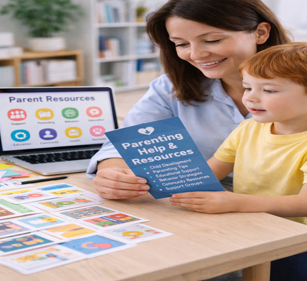

Find the right support
Programs & Services
Explore individualised educational, therapeutic, creative, movement, and counselling support at Tomotina Kids.
Learning & Education
Individualized academic pathways that help children learn with confidence.

Special Education
Individualized instruction in literacy, numeracy, language, attention, cognition, classroom readiness, writing, comprehension, visual perception, problem-solving, social interaction, and independent learning. Evidence-based Wilson Reading System and Orton-Gillingham approaches support children with dyslexia, learning disabilities, autism, and other developmental differences.

School Readiness Program
Structured and play-based activities build attention, listening, pre-academic concepts, classroom routines, social interaction, communication, independence, and confidence for a successful transition into school.

NIOS Support
Flexible, individualized support for children and adolescents completing education through the National Institute of Open Schooling, including subject tutoring, study planning, exam preparation, computer science, art, occupational therapy, and sports.
Communication & Behaviour
Practical support for communication, participation, regulation, and everyday connection.

Speech & Language Therapy
Children strengthen speech clarity, language understanding, vocabulary, sentence formation, listening, social communication, conversation skills, and confidence. Parents receive practical strategies for communication beyond therapy sessions.

Oral Placement Therapy (OPT)
Structured oral-motor activities develop jaw, lip, tongue, and facial-muscle strength, coordination, and awareness for clearer speech, chewing, swallowing, safe feeding, and improved oral function.

Applied Behavior Analysis (ABA)
Individualized behaviour support and positive reinforcement help children develop communication, attention, social, play, self-care, and daily living skills. Parent guidance and home activities support real-life application.
Independence & Therapy
Movement, sensory, and functional-life support for growing independence.
Activities of Daily Living (ADL)
Children practise dressing, eating, grooming, toilet use, hygiene, organization, routine-following, responsibility, and functional skills for home, school, and community life.

Occupational Therapy
Fun, child-friendly activities support sensory processing, movement, attention, play, learning, self-care, and confidence. Therapists work closely with families to help each child participate more fully in everyday life.

Sports Program
Structured physical activities build balance, coordination, strength, endurance, agility, motor skills, teamwork, instruction-following, self-control, confidence, and social development.
Creative Development
Creative expression that supports communication, regulation, confidence, and joy.
Art Program
Creative activities strengthen attention, fine motor skills, planning, problem-solving, patience, confidence, emotional regulation, sensory exploration, and self-expression.

Music Program
Singing, rhythm, movement, and simple instruments build listening, attention, communication, language, coordination, emotional regulation, and social interaction.

Dance & Movement Therapy (DMT)
Movement, rhythm, music, and creative play promote body awareness, coordination, confidence, self-expression, and emotional regulation. This non-verbal approach supports children with autism, ADHD, anxiety, or trauma at their own pace.

Adolescent Counselling
A safe and confidential space supporting teenagers with academic stress, emotional concerns, anxiety, confidence, relationships, communication, decision-making, and major life changes.
Questions from families
Program FAQs
Begin with an enquiry or centre visit. The team will listen to your concerns, learn about your child's strengths and routines, and suggest an appropriate first step.
Yes, when a combination of services supports the child's individualized goals. Recommendations are discussed with the family before a plan begins.
Families receive progress feedback and practical ideas that can support communication, learning, independence, or regulation in everyday routines.
No. Every child develops differently. The centre provides individualized support and reviews progress, but does not promise a particular result or timeline.
A thoughtful path forward
How we support your child
Clear steps, shared goals, and regular family communication.
Initial conversation
We listen to your concerns, priorities, and what you are noticing.
Assessment & plan
The team recommends a suitable path and creates individualised goals.
Support & review
Purposeful sessions, family updates, and progress reviews keep the plan responsive.
Not sure where to start?
We’ll guide you to the right program.